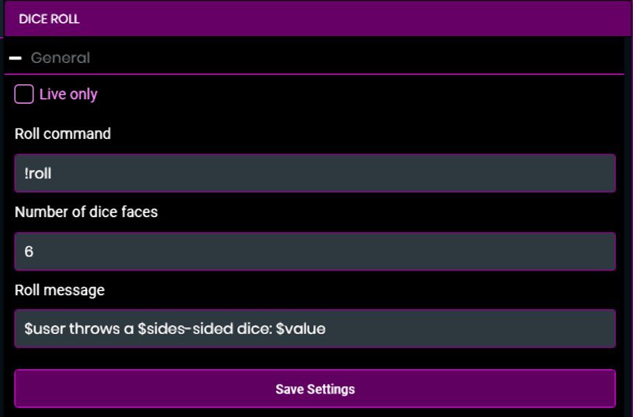
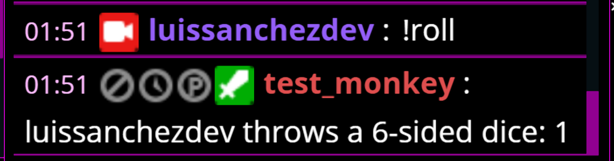
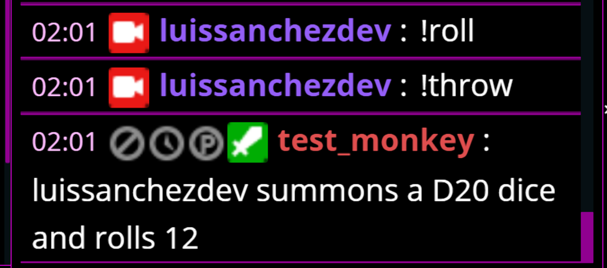
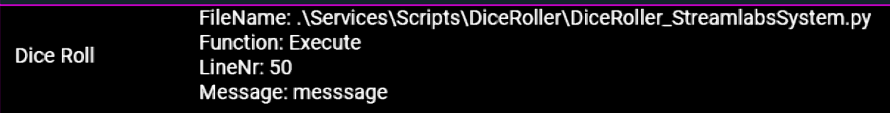

Add an user interface to your Streamlabs Chatbot script using UI_Config.json
Make your scripts look professional and easy to use with an user interface capable of customizing your script to meet your users requirements.
All the streamers who have used scripts before always check the configuration interface just after installing a script, so it makes sense to make your script as customizable as possible. Commands, cooldowns, messages, live only and script specific customizations!
In this post I will show you how to add an user interface to your script. The script we will create will be a dice roll script where the sides of the diCe can be customizable along the command, live only and output message.
Download
You can download the script to follow along from here (direct download) or here (support the blog).
Prerequisites
If you don’t know how to make a Streamlabs Chatbot script make sure to check out how to create your first Streamlabs Chatbot script.
You also need to understand JSON (JavaScript Object Notation) to edit the user interface file, you can learn about JSON at these W3Schools’ pages: JSON – Introduction and JSON Syntax.
Related to JSON, the JSON file will be converted to a Python Dictionary, you can learn more about python dictionaries here.
Adding an user interface to your script
1. Folder and files
We will create the next folder structure for our dice rolling script. The name will be Dice Roll.
%APPDATA%\Streamlabs\Streamlabs Chatbot\Services\Scripts\
└── DiceRoll\
├── DiceRoll_StreamlabsSystem.py
├── UI_Config.json
└── README.txt2. Initialize the script
Before we start editing our user interface we need to make our script appear in the scripts list, so we initialize it with the required variables and functions:
DiceRoll_StreamlabsSystem.py
ScriptName = "Dice Roll"
Description = "Adds a command to roll a customizable die"
Creator = "LuisSanchezDev"
Version = "1.0.0"
Website = "https://luissanchezdev.com/"
def Init():
pass
def Execute(data):
pass
def Tick():
passSave the file, reload the scripts and make sure it shows up in the scripts list. There is no need to enable it yet.
3. Add controls to the user interface
Before editing the UI_Config.json file to add our controls, we need to define what controls we need and what information they hold, for example:
| Configuration | Type | Value |
|---|---|---|
| Live only | checkbox | False |
| Roll command | text | !roll |
| Number of dice faces | numberbox | 6 |
| Roll message | text | $user throws a $sides-sided dice: $value |
The words starting with a dollar sign ($) are placeholders where we will put our own data.
Now that we know what information we need to customize the script we will edit the UI_Config.json file. Since it is a json file we enclose everything in curly brackets {}.
The first thing we need to specify is the filename where all the customized information will be stored.
UI_Config.json
{
"output_file": "config.json",
}Next step is to specify all the controls we want. Each control is a json object with key-value pairs specific to each control type. The most common keys are:
| Key name | Description |
|---|---|
| "type" | Specify the control type like checkbox, numberbox, textbox, etc. |
| "label" | The name shown next to the control input. |
| "value" | Control default value, this value is shown the first time the user opens the configuration interface. |
| "tooltip" | Text shown when leaving the mouse over the control, useful for extra description. |
| "group" | Specify the control group to keep your configuration interface clean and tidy. |
The entire controls list can be found in the Streamlabs Chatbot wiki. In this case we are only using a checkbox, 2 textboxes and a numberbox which only need the keys specified before.
UI_Config.json
{
"output_file": "config.json",
"live_only": {
"type": "checkbox",
"label": "Live only",
"value": false,
"tooltip": "Check this option to limit the ussage of this command to only live mode",
"group": "General"
},
"command": {
"type": "textbox",
"label": "Roll command",
"value": "!roll",
"tooltip": "Command to roll a dice",
"group": "General"
},
"faces": {
"type": "numberbox",
"label": "Number of dice faces",
"value": 6,
"tooltip": "Specify the amount of faces for the dice",
"group": "General"
},
"message": {
"type": "textbox",
"label": "Roll message",
"value": "$user throws a $sides-sided dice: $value",
"tooltip": "Shown when an user uses the command",
"group": "General"
},
}Save the file and go to the scripts list, click on the Dice Roll script name and you can now see your user interface.

Now with the user interface ready lets go and edit the script!
4. Reading the configuration file
When the user clicks on the SAVE SETTINGS button, Streamlabs Chatbot will create a file with the same name as the "output_file" value in the UI_Config.json file. If the user hasn’t clicked the button, this file will not exist so we will set a default configuration.
Importing required modules
Streamlabs Chatbot saves the json configuration file with UTF8 BOM encoding and since the Python version that is loaded is 2.7.13 we need to use the codecs module to open it. Also the starting path is where the Streamlabs Chatbot.exe is, so we need the os module to work with paths.
Add the following code to the beginning of your script file.
DiceRoll_StreamlabsSystem.py
import os
import json
import codecs
ScriptName = "Dice Roll"
[...]Global variables
Now we need some global variables to save important stuff such as the script directory path and the loaded settings so we can use them anywhere on the script.
You can see that I also added the path to the config file to my global variables, it makes it easier to read the code when loading the configuration.
DiceRoll_StreamlabsSystem.py
[...]
Website = "https://luissanchezdev.com/"
# Global variables
global PATH, CONFIG_FILE, SETTINGS
PATH = os.path.dirname(os.path.realpath(__file__))
CONFIG_FILE = os.path.join(PATH, "config.json")
SETTINGS = {}
def Init():
[...]Loading the configuration
We will load the configuration in the Init function to have everything ready before the script starts, since the config file is saved with the UTF8 BOM encoding we will use codecs.open since you can’t specify a encoding in the default open function.
If we get an error while trying to open the config file that means there is no config file, so we can enclose the file opening code in a try/except block to load a default configuration.
DiceRoll_StreamlabsSystem.py
[...]
def Init():
global PATH, CONFIG_FILE, SETTINGS
try:
# Open config file with UTF8 BOM encoding
with codecs.open(CONFIG_FILE, encoding="utf-8-sig", mode='r') as file:
SETTINGS = json.load(file, encoding="utf-8-sig")
except:
# Error loading the file, set default configuration
SETTINGS = {
"live_only": False,
"command": "!roll",
"faces": 6,
"message": "$user throws a $sides-sided dice: $value"
}
# Prevent dice faces being less than 2
if SETTINGS["faces"] < 2:
SETTINGS["faces"] = 2
[...]As you can see, we used the same keys as the UI_Config.json file, loading the configuration file gives you the same dictionary with the user settings.
After loading the configuration you should take the opportunity to clean the input data, in this case we just make sure the number of faces is no less than 2 so when the user rolls the dice they get one of two numbers at least.
Now the SETTINGS object has all the configuration, we can now use it wherever we want, like for example in the Execute function.
5. Creating the command
With all the configuration handy we now write our command, as always only allow chat messages, then check if the streamer is live and if the command should work as per the script configuration.
I like to put all the conditions that should prevent further execution at the beginning of the code block.
To check if the streamer is live we use the IsLive function from the Parent object.
DiceRoll_StreamlabsSystem.py
[...]
def Execute(data):
global SETTINGS
if not data.IsChatMessage():
return
if SETTINGS["live_only"]:
if not Parent.IsLive():
return
[...]Is time to check if the command the user sent is the command we want to react to,but wait! Last time we hardcoded the command in the script, now we must take the value from the loaded configuration.
The command is now saved in our SETTINGS variable, we can access it using the "command" key as follows:
DiceRoll_StreamlabsSystem.py
[...]
def Execute(data):
global SETTINGS
if not data.IsChatMessage():
return
if SETTINGS["live_only"]:
if not Parent.IsLive():
return
command = data.GetParam(0)
if command == SETTINGS["command"]:
# The command was used
[...]Now that we are filtering only the command we want is time to code the command logic.
We will use the function GetRandom from the Parent object to throw the dice and get a random number. You can see all the Parent functions at the Parent object wiki.
NOTE: The GetRandom function takes two arguments, the minimum and the maximum value. The maximum value is never reached so make sure to add +1 to the max value you want to get randomly.
DiceRoll_StreamlabsSystem.py
[...]
command = data.GetParam(0)
if command == SETTINGS["command"]:
# The command was used
dice_value = Parent.GetRandom(1, SETTINGS["faces"] + 1)
[...]With the random dice value ready we just have to prepare our output message and send it. Remember we need to replace these words in the output message:
$user throws a $sides-sided dice: $value
- $user: Replace with the username stored in
data.UserName. - $sides: Dice number of faces, this is in the
SETTINGS["faces"]configuration. - $value: The dice value, we just got it in
dice_value.
Every string has a replace function we can use tu replace words in them, also don’t forget to convert the numbers to strings:
DiceRoll_StreamlabsSystem.py
[...]
command = data.GetParam(0)
if command == SETTINGS["command"]:
# The command was used
dice_value = Parent.GetRandom(1, SETTINGS["faces"] + 1)
output_msg = SETTINGS["message"].replace("$user", data.UserName)
output_msg = output_msg.replace("$sides", str(SETTINGS["faces"]))
output_msg = output_msg.replace("$value", str(dice_value))
Parent.SendStreamMessage(output_msg)
[...]If you try your script right now it will work but when the user saves a new configuration they will need to reload all the scripts. To tackle this, Streamlabs Chatbot has an optional function you can use called ReloadSettings, this function gets called when the user saves new settings.
This is why you should initialize everything in the Init function, you just have to call it inside the ReloadSettings function to avoid reloading all scripts:
DiceRoll_StreamlabsSystem.py
[...]
def Tick():
pass
def ReloadSettings(jsonData):
Init()Save, reload the scripts, enable Dice Roll and test the !roll command!

Now change the configuration and try again! I’m using the !throw command with a 20 sided dice and the $user summons a D$sides dice and rolls $value$ message.

6. Add a README button
Your script is working! But what if you have a more complex script? Or you want to leave your contact information so that people can give you suggestions or report issues? You need a README.
First edit your README with all the info you want to give the user:
README.txt
Dice Roll made by Luis Sanchez
Found any bugs or want to give a suggestion?
* Email: [email protected]
* Discord: myname#0123
* Phone: 555-0123
Description
This script allows you and your viewers to roll a dice with customizable settings!
Features
* Anyone can roll a dice!
* 6 sided dice? 20 sides? 100? Set your own dice sides!
* Customizable messageNow add a button as the first control in your UI_Config.json, this button will show our README.txt.
UI_Config.json
{
"output_file": "config.json",
"readme": {
"type": "button",
"label": "Open README",
"tooltip": "Click here to open the README for features list, usage and contact information",
"function": "open_readme",
"wsevent": "",
"group": "General"
},
"live_only": {
[...]The function value in the button control is the name of the function you want this button to run.
Let’s add an open_readme function to our script!
DiceRoll_StreamlabsSystem.py
[...]
def ReloadSettings(jsonData):
Init()
def open_readme():
global PATH
readme_path = os.path.join(PATH, "README.txt")
os.startfile(readme_path)As you can see, we use os.startfile to open the README.txt file. If you have your script on Github you can replace the file path with an url and it will open it.
To test the button you have to follow these steps:
- Save all files
- Reload the scripts
- Click on the
Dice Rollscript to show the user interface - Click the
OPEN READMEbutton
You have to do it this way because everytime you click on the script name, the user interface gets reloaded. Also the script that is currently running doesn’t have the function defined so it will just throw an error. But even if you have the function defined and the user interface open and reload the scripts the button will stop working because it was linked to the function from the previously loaded script!
Extra. Common error
When using dictionaries there is an error with a non-descriptive error message, I modified a line so you can take a look at it:

Cool story bro! What is the problem? Well… the problem is that you tried to access a key in the dictionary that doesn’t exists!
This is how the line #50 looks, you can see that we tried to access the messsage key instead of the message key!
DiceRoll_StreamlabsSystem.py
output_msg = SETTINGS["messsage"].replace("$user", data.UserName)So when you see an error message like this one, make sure you are using the correct key.
Conclusion
It wasn’t that difficult right? Create your UI_Config.json file, paste the controls you want and read the values from the script! With this information now your scripts will look professional and will be easy to use.
If you start creating a lot of sscripts I recommend to fill the settings first inside the script and when you finish the script, create your UI_Config.json file. Remember to make your script super easy to use and always add a README button for instructions on how to use your script.
Leave a Comment